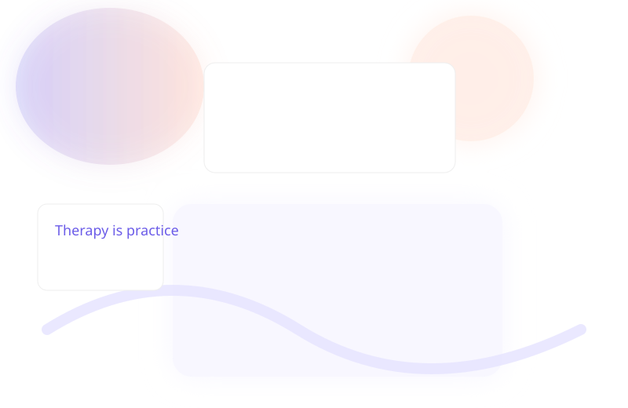

Evidence + Practical Skills
Integrating cognitive, somatic, and interpersonal methods so you build tools you can use between sessions.
{{TAGLINE}}
I'm {{THERAPIST_NAME}}, {{LICENSE}}. I offer confidential, evidence-informed psychotherapy in {{CITY}}, {{STATE}} for anxiety, trauma recovery, relationship repair, burnout, and life transitions. We tailor the work to your goals and pace.

Truth: Many people engage in therapy to learn skills, process life-stage changes, and prevent problems from escalating. Therapy can be proactive and preventive.
Truth: Change often happens gradually. I work collaboratively to set realistic goals and measure progress over time, not promise instant solutions.
Truth: Your privacy and autonomy are prioritized. I explain limits to confidentiality clearly and work with you to protect your information.
Integrating cognitive, somatic, and interpersonal methods so you build tools you can use between sessions.
Creating a reliable, nonjudgmental space where new ways of relating can be practiced and made meaningful.
Situating symptoms within life story, culture, and current stressors to create relevant strategies rather than isolated techniques.
Client: mid-career professional. Focus: boundary-setting, values alignment, restoring energy. Outcome: clearer choices about workload and practical strategies to protect time. (Anonymized and hypothetical.)
Client: partnered individual. Focus: communication patterns, managing reactivity, repair skills. Outcome: improved conflict conversations and predictable safety in discussions.
Standard sessions are 50 minutes. Many people start weekly and move to biweekly as goals are met; frequency is flexible and discussed collaboratively.
I am a private-pay clinician. I provide superbills you may submit to your insurer for possible reimbursement where allowed.
If you are in imminent danger or a medical emergency, contact local emergency services or a crisis line immediately. I cannot provide emergency services via email or text.